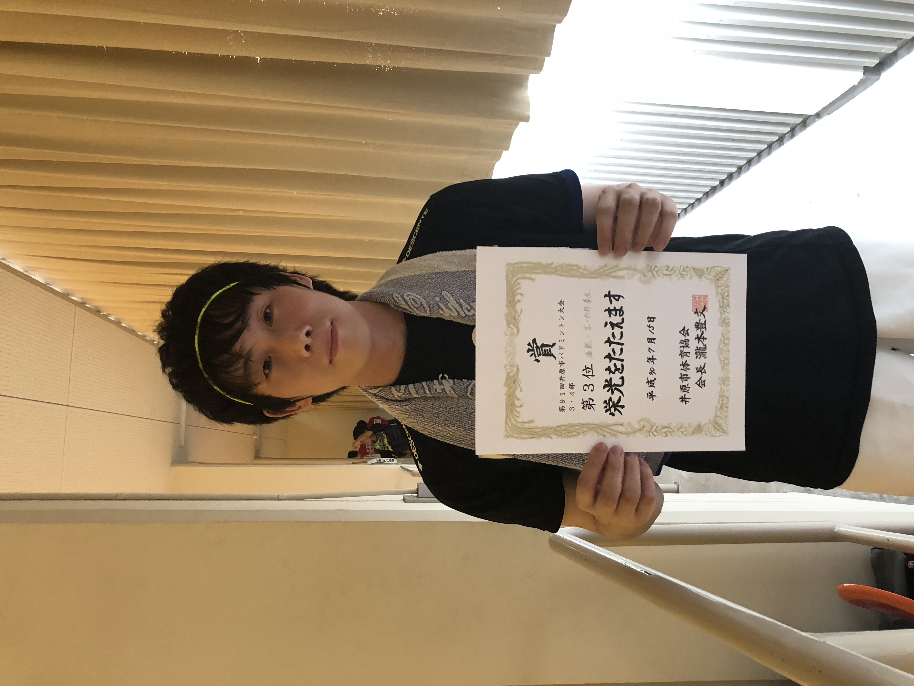
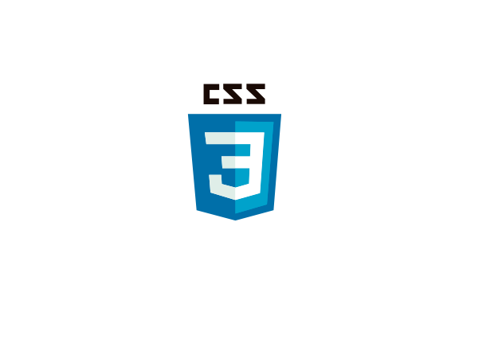

About

氏名:西野 泰生(にしの やすき)
居住地:岡山県
特技:バドミントン
社会人になっても継続しており、各地域の市民大会で賞状を頂くこともありました。男子ダブルスとミックスダブルスが得意です。
趣味:ソロキャンプ
主に冬にソロでキャンプに行っており、愛用しているテンマクTC(サーカステント)を設営して、焚火や自然を楽しんでいます。
2020年12月岡山県高梁市にある弥高山公園キャンプ場でのソロキャンプ

Skill

HTML
Progate初級編を履修後、「本当によくわかるHTML&CSSの教科書」を参考にして、本ページを作成可能レベルです。

CSS
フォントカラー変更,画像編集,簡単なレイアウト変更などができます。

Java
職業訓練校で「基礎からのJava」を参考書に学習。Eclipseを使い簡単な計算機を作成。paizaにてDランクまでは解答可能レベルです。
VB.net
職業訓練校で「Visual Basicの絵本」を参考書に学習。VS2019を使いwindowフォームアプリを作成。(StopWatch,電卓,PLC制御など)